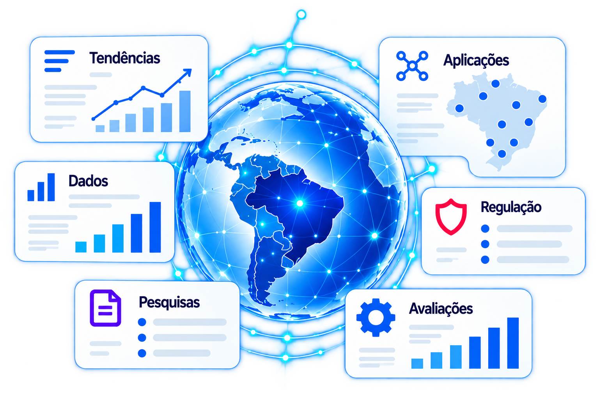

Observar.IA — Observatório de Inteligência Artificial do unesp.IA
O Observar.IA monitora e analisa a evolução, a adoção e os impactos da Inteligência Artificial, integrando dados, pesquisas, tecnologias, regulamentações e tendências.

Observar, analisar e compreender a Inteligência Artificial
Dados, pesquisas, avaliações, regulamentações, aplicações e análises para acompanhar a evolução, a adoção e os impactos da Inteligência Artificial.
Radar de IA
Modelos, ferramentas, agentes, artigos, empresas, aplicações, políticas e eventos relevantes.
Dados e Indicadores
Bases públicas, pesquisas e datasets próprios, com painéis, gráficos e séries históricas.
Pesquisas
Resultados relevantes do Pesquisar.IA, sem duplicar seu catálogo de projetos e publicações.
Avaliações e Benchmarks
Comparações reproduzíveis de modelos, agentes, RAG e aplicações, com critérios e limitações.
Regulação e Governança
Legislação, políticas públicas, ética, privacidade, LGPD e recomendações nacionais e internacionais.
Casos de Uso
Aplicações em educação, saúde, agronegócio, indústria, governo, direito, gestão e meio ambiente.
Publicações e Relatórios
Relatórios, notas técnicas, estudos, artigos, análises, levantamentos e séries históricas.
- Dados
- Informação
- Análise
- Evidência
- Conhecimento
- Decisão
Integração com o ecossistema
Observar para alimentar os quatro eixos
O Observar.IA é transversal: fornece tendências, referências e evidências aos eixos. Em retorno, experimentos, pesquisas e soluções geram novos dados e perguntas para o Observatório.
- 01Aprender.IATendências e evidências para formação.
- 02Experimentar.IAModelos e ferramentas para testes.
- 03Pesquisar.IALacunas científicas e estado da arte.
- 04Inovar.IAOportunidades para aplicações e soluções.
Acervo verificado
Conteúdos publicados
Notícias são um dos tipos de conteúdo do Observatório. Todo item público informa procedência, data e situação editorial.
Método de trabalho
Monitorar, integrar e produzir evidências
O fluxo combina fontes rastreáveis, critérios explícitos, experimentação e curadoria humana. Cada publicação deve informar sua origem e suas limitações.
- 1MonitorarAcompanhar fontes científicas, tecnológicas, públicas e sociais.
- 2IntegrarRelacionar bases, publicações, APIs e fontes públicas.
- 3AnalisarIdentificar padrões, tendências, relações e mudanças.
- 4AvaliarComparar modelos, ferramentas e resultados com critérios definidos.
- 5EvidenciarContextualizar achados para pesquisa e decisões.
- 6PublicarCompartilhar análises, indicadores, relatórios e resultados.
Agentes podem apoiar monitoramento, coleta, classificação, detecção de artigos e tendências, verificação de fontes e síntese. Não substituem a análise crítica nem a responsabilidade editorial.
Em desenvolvimento
Pergunte ao Observatório
Consulte os dados, pesquisas, indicadores e conteúdos do Observar.IA utilizando linguagem natural.
Futuramente, agentes inteligentes e RAG poderão responder com base nas fontes mantidas pelo Observatório, citando evidências e limites. Nenhuma resposta automática está ativa nesta etapa.
Fontes e metodologia
Fontes abertas, critérios transparentes
A arquitetura pode evoluir para integrar bases públicas, repositórios científicos, observatórios e APIs. Entre as fontes possíveis estão OBIA/NIC.br, CETIC.br, IBGE, dados.gov.br, CAPES, CNPq, OpenAlex, Crossref, arXiv, Hugging Face, GitHub, OECD, UNESCO, Stanford AI Index e Banco Mundial. Esta lista indica possibilidades, não integrações já ativas.
Agentes poderão monitorar fontes, coletar e classificar conteúdos, identificar tendências e mudanças regulatórias, verificar referências e preparar sínteses. A publicação continuará condicionada à rastreabilidade e à revisão humana.